Contents:
- Introduction
- Data Collection
- Direct Messaging across platforms: Metadata Analysis
- Direct Messaging across platforms: Content Analysis
- Classifying Messages by Platform
- Conclusions
Introduction
The purpose of this project was to gain insight into the behavior of 'Digital Natives', broadly defined as the generation of people raised in the age of digital technology/the Internet Age. Specifically, this report focuses on investigating the use of direct messaging by digital natives, and potential variations in the use of direct messaging across platforms. Direct messaging, defined here as the exchange of messages between individuals or groups of individuals (as opposed to wider-reaching content such as posts on social media), constitutes a large portion of the digital interactions in which digital natives participate. To gauge the importance of direct messaging in the small population from which I gathered data for this project (friends of mine, all college-aged women), I surveyed a few people (5 respondents) on their direct messaging behavior. 80% of those surveyed reported that they use direct messaging as their primary form of digital communication. I also asked survey respondents to rank the top 3 media platforms which they believe they use most for direct messaging. The results (shown below) indicate that Texts/iMessage, Facebook Messenger, and Email are the most commonly used direct messaging platforms. These platforms (+ twitter) were thus chosen as the sources investigated in this project.
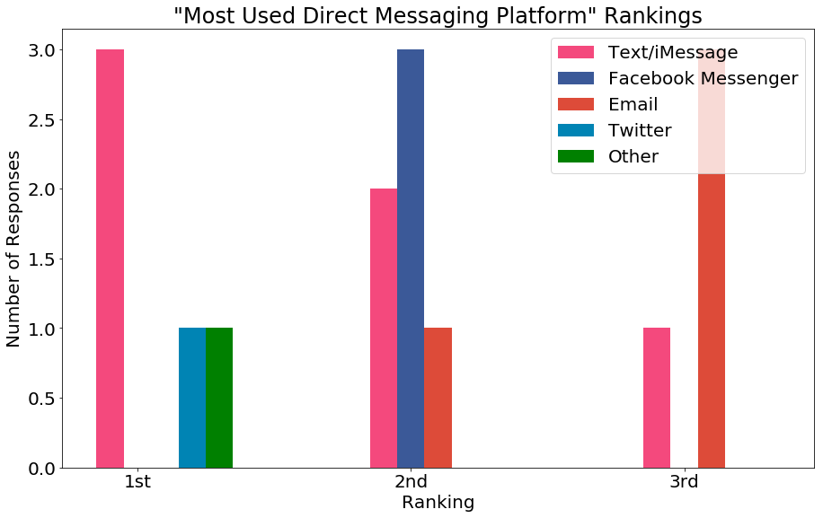Questions and Hypotheses
To systematically evaluate the use of direct messaging by digital natives across platforms, I looked at both metadata traces(e.g number of messages, timing of messages, etc.) as well as message content. Specifically, I focused on the following questions:
- What platforms do digital natives use most for messaging?
- Total number of messages exchanged
- Percent of messages sent and received
- Number of messages exchanged per day
- Number of conversations
- Number of messages per conversation
- How do the social network structures differ between platforms? Are they tight-knit groups or more diverse? Are they mainly individual messages or group messages?
- Number of unique people messaged
- Number of people per conversation (e.g. group chats, email chains)
- When do digital natives do this messaging? Does this vary by platform?
- Messaging behavior by month
- Messaging behavior by time of day
- Messaging behavior by day of the week
- What does the content of these messages look like? How does message content vary across platforms
- Number of words per message
- Average word length
- Use of emojis
- Topic modelling
- Most frequent words
I hypothesized based on personal experience, and from discussions with friends, that texting/ iMessage would be the most-used direct messaging platform, followed by facebook messenger (in accordance with preliminary survey responses). Email is often viewed as a more professionally- oriented platform (used for academic matters), while platforms like iMessage are mainly for personal use. Therefore, I hypothesized that Email messages would be exchanged across a wider range of distinct users, be less frequent, consist of smaller conversations, and generally be longer. On the other hand, I hypothesized that iMessages would be exchanged across a smaller group of close friends, with long conversations made up of short messages.
Data Collection
I was able to collect the direct messages of two 'digital natives' (both college-aged women). From person 1, I collected Email data, Facebook Messenger data, and text messages. From person 2, I collected Email data, Facebook Messenger data, and twitter messages. Because overall messaging behavior is likely to differ between individuals, and because of the small sample size, all analyses are separated by user (referred to as User 1 or User 2). Data was collected through a combination of direct data archive downloads from the media sources and text parsing. The data collection process is documented in the notebooks linked below for email, facebook, iMessage, and twitter data. To evaluate messaging behavior over a distinct time period, all analyses were limited to messages from 2017 (all users and platforms had messages extending back farther than 2017). Because of the different organization of these four platforms, certain features (such as what constitues a conversation) were defined differently between platforms:
- Facebook: For facebook, all messages sent through Facebook Messenger were considered to be direct messages (including group messages). A conversation was defined as the set of all messages between two individuals or a group of individuals. An archive of facebook messenger data was downloaded from facebook.com, and processed as described in this notebook
- Email: For email, all messages were downloaded from GMail using Takeout and processed as described here . A conversation was defined as all messages sent on a given chain(replies to some original message).
- iMessage: iMessage data was downloaded from an iPhone using iTunes, extracted using iExplorer, and processed as described here . A conversation as defined as the set of all messages between individuals or groups of individuals.
- Twitter: An archive of twitter data was downloaded from twitter.com and processed as described here . Only messages in reply to another use's message (those starting with the @ handle) were considered to be direct messages. A conversation was defined as the set of all messages in response to the original message.
Direct Messaging Across Platforms: Metadata Analysis
The data gathered was first explored in terms of overall messaging behavior. The data traces were evaluated based on feature such as the total number of messages, the number of users messaged, and the timing of these messages.
Most Used Direct Messaging Platforms
Total Number of Messages: First evaluated was the total number of messages exchanged through each platform. For user 1, the greatest number of messages were exchanged via iMessage/texts, in accordance with the survey results, followed by email and facebook messenger. For user 2, the greatest number of messages were exchanged via twitter, followed by email and facebook. The finding that fewer messages were exchanged via facebook messenger than via email for both users was unexpected given the results of the initial survey. One possible explanation is that the majority of these email messages were not necessarily conversations, but rather emails that were sent to an entire email list (e.g. schoolwide emails). In fact, this seems to be the case. When the messages were analyzed in terms of the percentage of total messages sent by the user, messages sent via email comprised only 5-10% of total messages, while those sent via facebook messenger and texts constituted upwards of 20%. 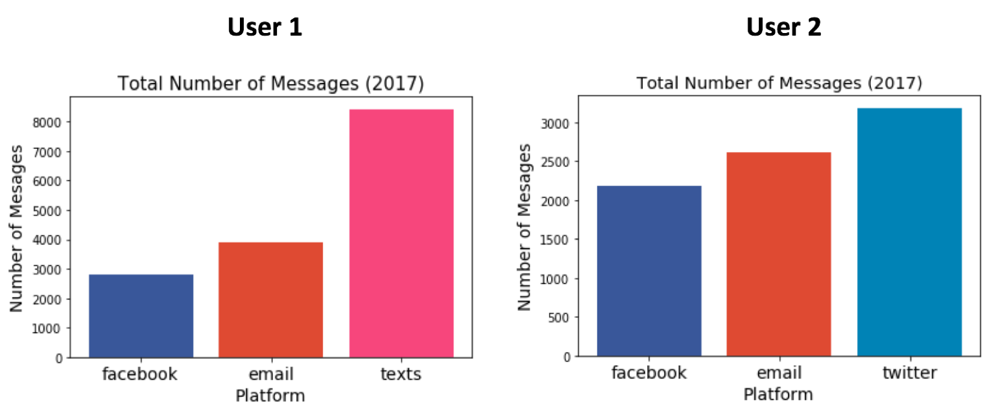 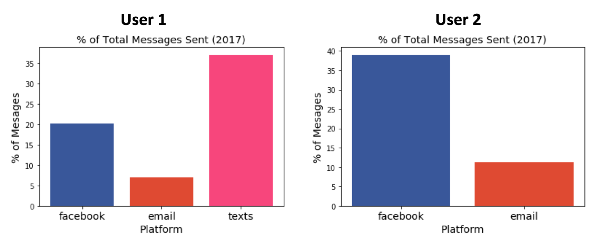 Average Number of Messages per Day: The number of messages exchanged per platform was quantified as the average number of messages sent per platform per day. This analysis reveals that User 1 is generally a more active direct messenger, exchanging between 8 and 24 messages on average per day, compared with User 2, who exchanges only between 6 and 9 messages per day. 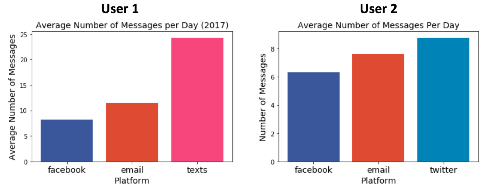 Number and Length of Conversations: The total number of conversations exchanged by platform (where a conversation is defined as described above) was analyzed for each user. For User 1, a far greater number of conversations were exchanged via email than either facebook messenger or iMessage. For User 2, most conversations were exchanged via twitter, followed by email. This dramatic difference between the number of conversations exchanged per platform, especially for User 1 can be explained by the different nature of conversations on these different platforms. Facbook and iMessage conversations are generally fewer but longer, as shown below, while email conversations are more likely to be short exchanges of information accomplished in only a few messages. 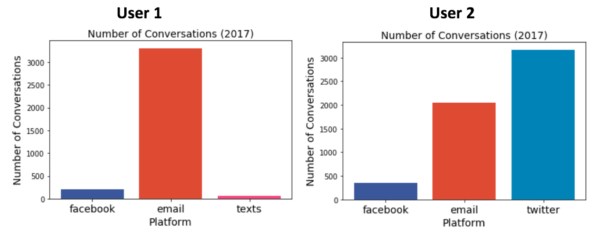 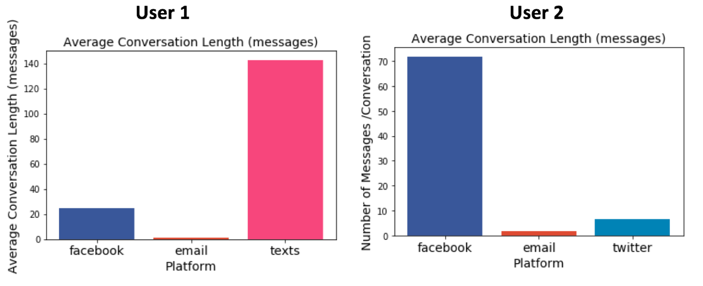 Number of Unique Users Messaged: To gain further insight into the different ways in which these platforms are used, I next looked at the number of unique users messaged. This analysis revealed that for both users, messages were exchanged between a greater number of distinct individuals via email than via facebook messenger (user 2 exchanged messages with an equally large group of distinct users via twitter). This result confirms the suggestion above that email is likely being used primarily for exchanges of a more professional nature, involving a wide range of individuals (i.e a school community), while facebook messages are used for more private exchanges between smaller groups of close friends. 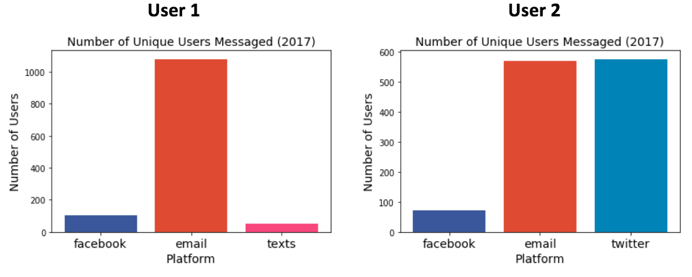
Number of People per Conversation: I also decided to explore the average number of people per conversation to investigate whether certain media platforms were being used primarily for group messages vs. individual messages. This analysis shows that for both users, the mean number of people per conversation is greatest for facebook messenger. This finding confirms personal experience that I have had using facebook messenger to coordinate group projects and events amongst larger groups of people. Text messages also seem to be used extensively by User 1 for group messaging, with an average of 1.83 people (besides the user) per conversation. For both users, email conversations contain the fewest number of people on average, again in line with the emerging picture of email as a medium for short exchanges rather than lengthy conversations. (*Note, for this analysis, the number of people in a conversation was defined as the number of other users actively contributing messages, rather than simply users to which a group message was sent). Because I had access only to User 2's own twitter messages(not exchanges between other users), such a conversation analysis could not be performed for User 2's twitter data.
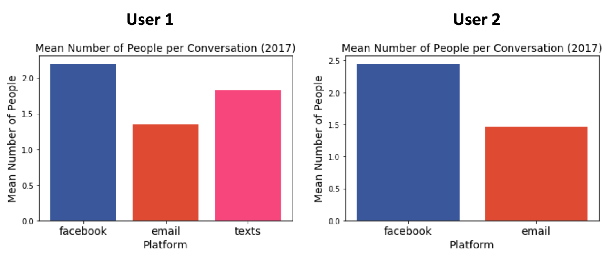Timing of Direct Messaging Across Platforms
I next set out to evaluate whether the timing of message exchange varied based on the four platforms explored (on a monthly, daily, and hourly basis). Based on the result described above, it seems that the different platforms are being used rather differently (emails for shorter conversations between a more varied group of people, facebook messages/texts for longer conversations between a smaller number of people). I hypothesized that if in fact emails are being used mainly for academic/professional exchanges, the number of emails would be greatest during the middle of the day ('business hours'), during the school year, and during weekdays, while texts and facebook messages would texts would be exchanged mainly during 'non-business' hours.
Messaging Activity by Month: This hypothesis is at least partially supported by the data. For both users, there is a definite drops in the number of emails sent during the summer months. However, this drop also occurs for iMessage and for facebook messenger, suggesting that the temporal patterns of messaging across these platforms isn't significantly different. The one exception to this pattern occurs for User 2's use of twitter. The number of twitter messages sent peaks during the summer months and decreases during the school year, suggesting that the use of this platform (which is used primarily for personal/social messaging) is greatest during 'non-business' months.
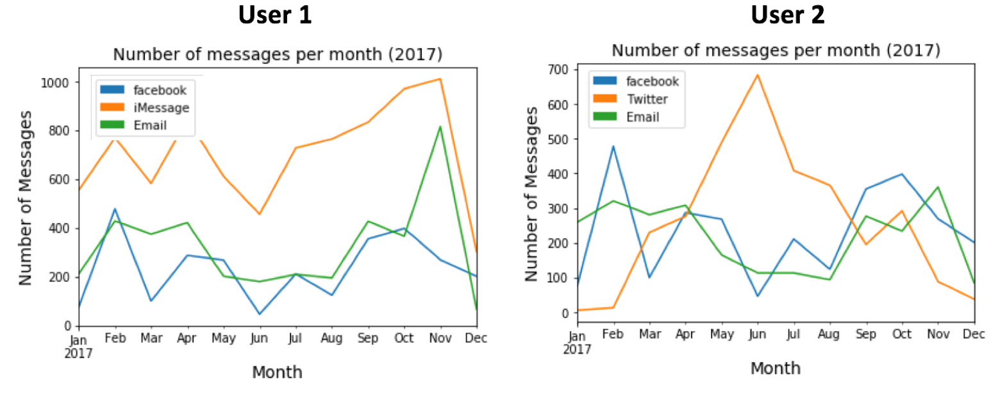Messaging Activity by Time: The analysis of messaging behavior by time of day shows the greatest number of messages are exchanged during the afternoon and evening hours. However, this pattern does not differ significantly between platforms, again suggesting that there is not a definite differentiation between 'business hours' for academic (email) messages and 'personal/social hours' for personal messaging. Instead, all platforms are used rather consistently (though the different degrees as shown above) throughout the waking hours of the day.
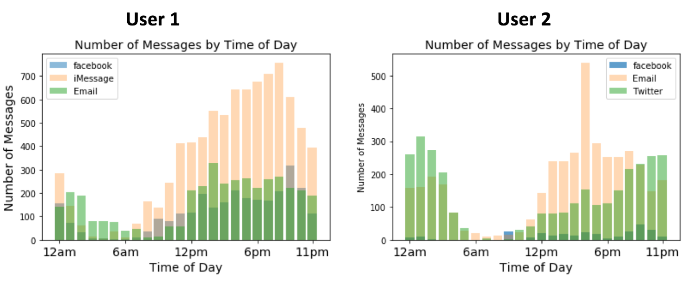Direct Messaging Across Platforms: Content Analysis
Message Length: The analysis conducted above of metadata traces across four direct messaging platforms suggest that there are definite differences in the ways in which these platforms are being used by digital natives. To explore these differences in more depth, I decided also to look at the content of the messages. I first evaluated the average message length per platform. For both users, the average message length per email was much greater (around 400 words/message) than for any other platform. This is complementary to the earlier finding that email conversations are generally shorter than those on other platforms, and suggests that rather than many short messages, information is primarily exchanged via email through a small number of lengthy messages. The longer length of email messages compared to those on platforms like facebook messenger, twitter, and iMessage may also owe partly to the differing nature of the messages themselves. Emails generally follow a certain format, including the inclusion greetings, signatures, and other formalities in addition to the main content, all of which may contribute additional words not seen on other platforms.
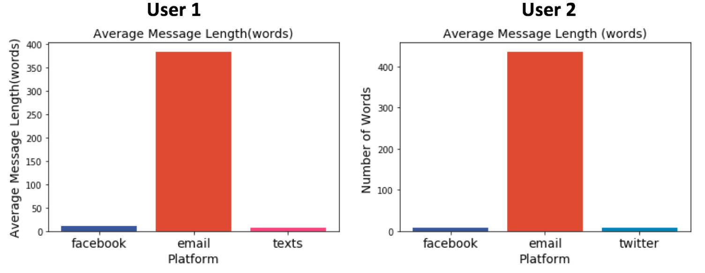Use of Emojis 😀 :To evaluate the formality of the messages exchanged on the different platforms, I decided to examine the number of emojis used as a simple heuristic. Emojis(which I limited to include the set of 67 core emojis) are generally considered to be characteristic of personal/social messaging, used as informal expressions of emotion between friends. To quantify the use of emojis, I counted the total number of emojis used across all messages per platform and normalized this value by the total number of messages sent per platform. The results from User 1 confirm my hypothesis that fewer emojis are being used in email messages than in either facebook messages or texts, perhaps suggesting some level of increased formality in email exchanges. The results from User 1 however, are rather different, showing nearly equal use of emojis between facebook messages and emails. User 2 also uses a greater number of emojis across all platforms(between 7 and 9 for email and facebook) compared to user 1 (1-2.5 emojis). This difference may simply be indicative of User 2's proclivity for extensive emojis use (though this doesn't apply to twitter messages), suggesting that the use of emojis depends more on the tendencies of a particular user than on the messaging platform itself.
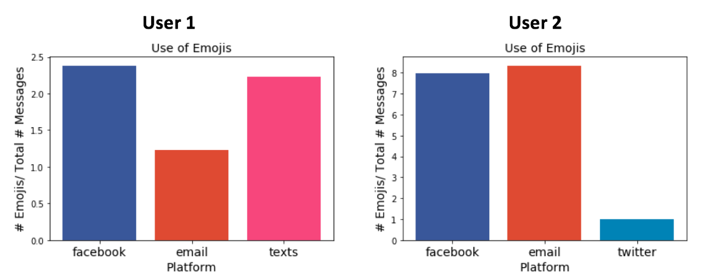Average Word Length: Another metric by which I decided to evaluate message content is the average word length per message. Previous research (Brooke et al., 2010) has revealed the correlation between word length and formality in the English language.This makes intuitive sense, especially in the context of direct messaging, in which informal slang, abbreviations and 'text-language' consisting mainly of short words, abounds. The results of this analysis in fact indicate that for both users, the average word length is greater for email messages than for messages on any other platform. This suggests that email messages may in fact be more formal in content, or at least less inclined to use as many short, abbreviated words as other messaging platforms.
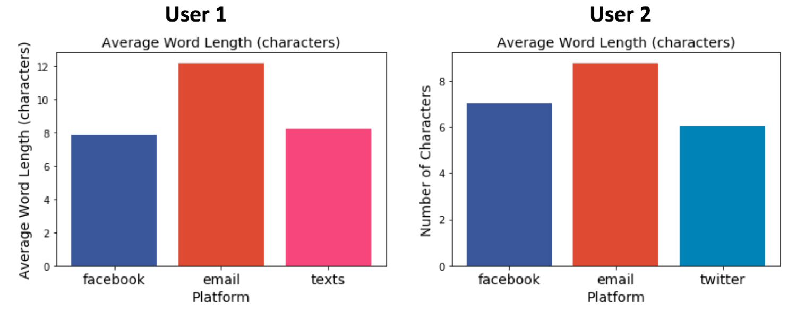Most Frequently Used Words: Finally, to look explicitly at the types of language used, I found at the most frequently used words on each messaging platform. Many of the most frequent words were common across platforms, including words like 'I', 'I'm', 'like', 'think', 'want', and 'know'. However, some differences are also apparent. On facebook messenger (data below shown for User 1), the word 'time', and 'work' appear as frequently words not common to other platforms. This may suggest, for instance, that facebook messenger is being used to coordinate meetings (i.e. finding a 'time' to 'work' on a project) amongst groups, a common practice in my personal experience. For email, the most frequent words are variants of the words 'google', 'group', and 'wellesley','edu'(data below shown for User 1). As the email inbox analyzed is a Wellesley inbox, and because many messages are those received through google groups, this is expected. The prevalence of these words also confirms earlier suggestions that emails are being used primarily for academic matters. On twitter, the list of most frequently used words is comprised in large part of short, informal, abbreviated words like 'u'(you), 'ur'(your), and 'omg'. The twitter handles (usernames) of the users to which the messages were written in response to also make an appearance. The wordclouds below provide a visualization of some of the most frequently used words on each platform.
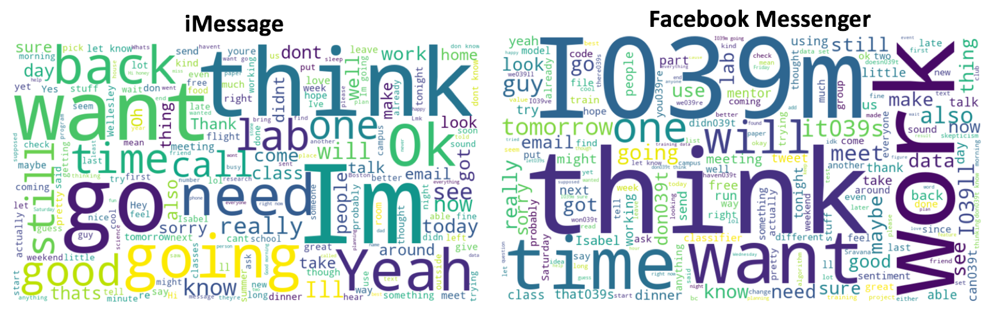 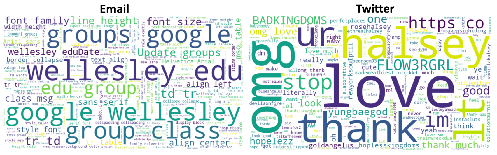Topic Modelling I also applied topic modeling to evaluate the types of language used across direct messaging platforms. Topic modeling is a probabilistic statistical modeling technique through which the 'topics' (which appear as clusters of similar words) can be extracted from a document. In this case, I applied topic modeling to the corpus of all messages from each platform, divided into 5 'topics' with 5 words per topic. The results of this topic modeling displayed below tell a story similar to that revealed by word frequency analysis. iMessage topics include clusters of potentially academic words like 'know' and 'think', as well as clusters of more informal words like 'I'm', 'you', and 'okay'. The topics generated for Email messages are distinctly more academic in nature, including words like 'publication', 'university', 'physics', 'research', and 'student'. As the word frequency analysis above revealed, facebook messages are clustered into topics seemingly related to planning such as 'time', and 'meet'. The word 'data' also appears twice, likely in an academic context. The topics on twitter in contrast, are less specific, and instead consist of general and informal words like 'yeah', yes', and 'I've'. In no cases is it clear that the topic model was able to distill the message content into distinct topics. Instead, many words appear across multiple clusters or are related to words in other clusters. This is likely a result of the great diversity of messages within each of the text corpuses. The text of each platform contains a wide variety of conversations on different topics, which can be difficult to condense into 5 most prevalent topics. Nevertheless, this analysis provides some insight into the types of words and ideas which recur on these different platforms.
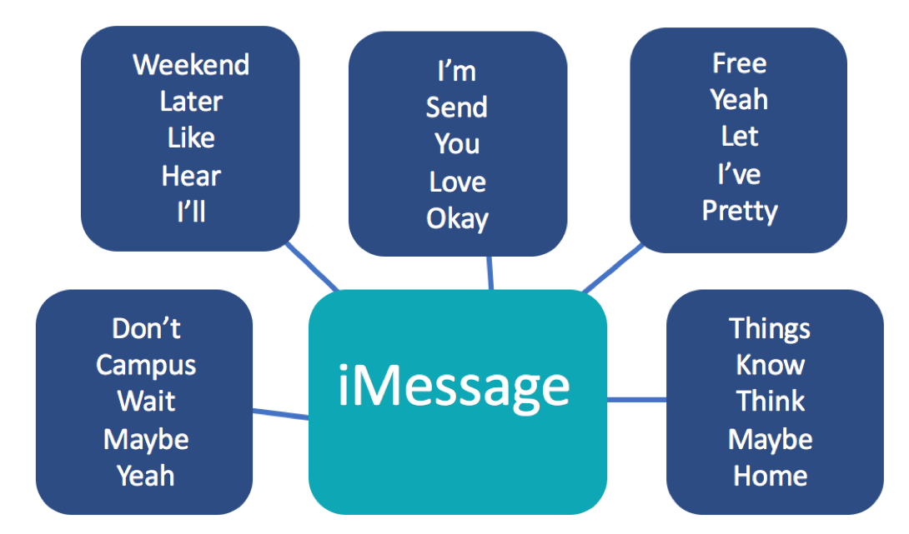 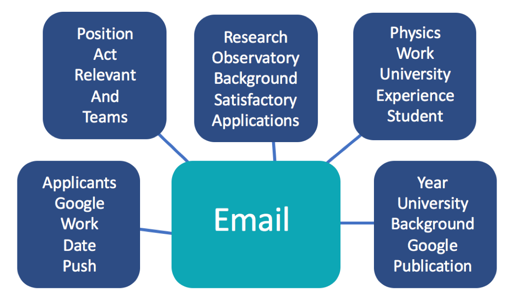 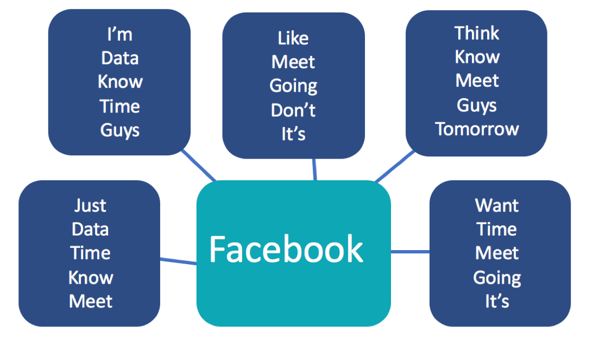 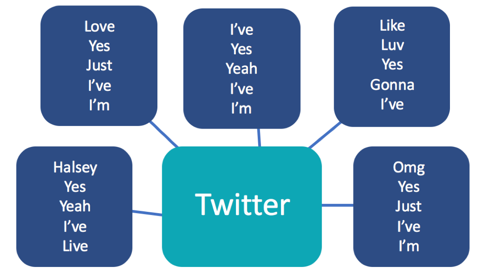Classifying Messages by Platform
Based on the results of the analysis presented above, there seem to be distinct differences between the content of direct messages on the four platforms evaluated. To evaluate how distinctive these text features are between platforms, a classifier was trained to predict the source(platform) of a given message. A Naive Bayes classifier was trained on the content of individual messages taken from three sources (email, facebook, and iMessage) (1208 messages from each), and tested on a revered set containing 302 messages from each source. A variety of methods of text vectorization were also used.
- In bag-of-words unigram representation, each
word is tokenized, and the frequency of each word token's occurrence in the document is counted.
A Naive Bayes classifier trained with this vectorization (produced using sklean's
countVectorizer_ produced an average test accuracy of 84.6% after 4-fold cross-validation. - A bag-of-words representation using bi-grams (where each token represents a sequence of two words instead of one word, as above) produced an average test accuracy of 90.5% with 4-fold cross validation.
- A Tf-idf (term-frequency times inverse document frequency) vectorization scheme re-weights the text features according to overall frequency in the text corpus. In a large corpus, this ensures that rare, informative words are not outweighed by common, frequent words with little meaning. A Naive Bayes classifier trained with this vectorization scheme (along with a 4-gram representation, chosen for the best test accuracy through hyperparameter tuning) produced an average test accuracy of 95.8% with 4-fold cross validation.